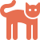

Prendre RDV pour une adoption ,
Mais d’abord ! une présentation


Yoda & Yami :
Deux petits chats inséparables, donc à adopter ensemble
Yoda et Yami se complètent mais ont deux caractères très différents
Yoda est très attaché à son maître, si vous ne rentrez pas 2 soirs d’affilée, ce dernier boudera pendant deux jours, mais vous aurez droit à une avalanche de caresses par la suite et il ne vous quittera plus
Yami, quant à lui, ne se fâche jamais, il viendra chercher ses caresses aussi tôt mais ira jouer très rapidement et ne vous rejoindra pas pour votre sieste
Néanmoins, ils ont des points en commun, ils sont tous deux fans de bonbons et n’attendent que ça tous les soirs
Ils ne sont pas aptes à vivre avec d’autres animaux , ni Chien ni Chats ni Nac , ils devront donc être les seuls princes de la maison
Une période de cohabitation de 2 mois est applicable avant l’adoption definitive , et une visite par semaine sera à mettre en place avec nos équipes durant cette période pour le bien-être de nos animaux
Une fois cette période terminée positivement, vous repartirez Pate dans la main avec votre compagon pour la vie